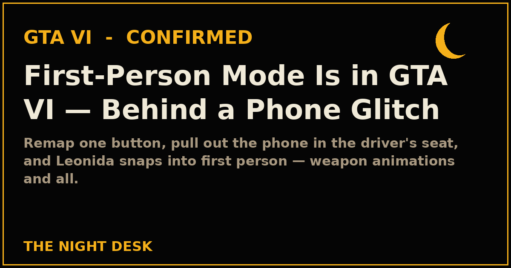

November 21, 2026 · 2 min read
GTA VI Has a First-Person Mode After All — It Just Takes a Glitch to Unlock It

Headline card by The Night Desk
GTA VI Has a First-Person Mode After All — It Just Takes a Glitch to Unlock It
Rockstar said GTA VI would launch without a first-person mode — the game was built around a third-person camera, and that was that. It took players less than a day to find the mode anyway, hiding behind a phone, a remapped button, and a burst of bad timing the camera system can't survive.
This one is confirmed: the same method, in the same order, has been published by Dexerto, Kotaku, Insider Gaming, TweakTown, ComicBook, LADbible and FandomWire, and journalists at Pure Xbox and PC Gamer replicated the steps themselves. The method is credited to YouTube glitch hunters oneboyler and OrangeGuy, and a clip of it shared by Brazilian creator DunKa has passed 5.8 million views. The first-person weapon animations are already in the build — which is why the result looks less like a broken camera and more like a feature that shipped with the switch turned off.
Step one. Go to Settings → Controller and change the Touch Pad Button on PS5 — or the View Button on Xbox — from Map to Camera (it may read "Camera 2/2").
Step two. Get into any vehicle and sit in the driver's seat. Press Up on the D-pad to pull out the in-game phone.
Step three. Put the phone away with Circle on PS5 or B on Xbox — and at the same moment, start spamming the Touch Pad or View button you just remapped. It can take a few tries. When it lands, the phone disappears but the driver's-seat camera stays.
Step four. Get out of the car. You're still in first person — on foot, in fights, weapons up. The animations hold together far better than a glitch has any right to.
The catch. There is no clean way back. Every guide repeats the same warning: once the glitch is active, the only known way to restore third person is to reload your save — so make a manual save before you try it. Expect quirks, too: arms can clip through the camera, and some players report the tint band from the windshield staying on screen after they leave the car, because the game still thinks they're sitting behind glass.
The Night Desk is tracking GTA VI's secrets as they verify. Whether Rockstar patches this out or eventually flips the switch officially — GTA V got its first-person mode after launch, too — is the open question. For now, Leonida through Jason and Lucia's own eyes is a five-step trick away. Save first.
Source: Dexerto, "GTA 6 glitch lets players access first-person mode" and Dexerto's first-person guide; Kotaku, "How to Play GTA 6 in First-Person Using A Glitch"; Insider Gaming, "How To Do First-Person Glitch in GTA 6"; TweakTown; ComicBook (all Nov. 19–20, 2026). Method credited to oneboyler and OrangeGuy on YouTube. This is guide and community intel collected by The Night Desk — not our own gameplay or discovery.
Source: Dexerto, Kotaku, Insider Gaming, TweakTown, and ComicBook (Nov. 2026)
← Back to latest stories